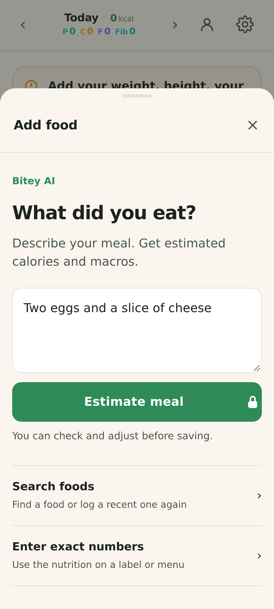
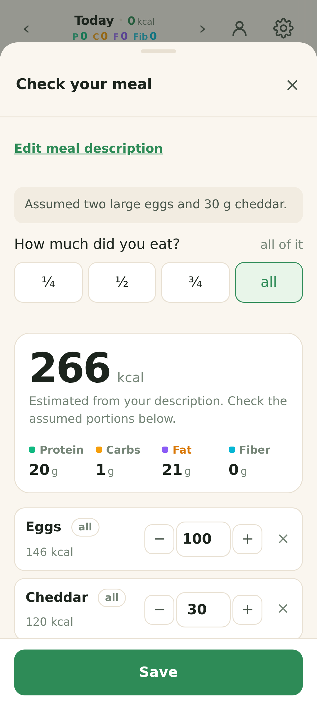
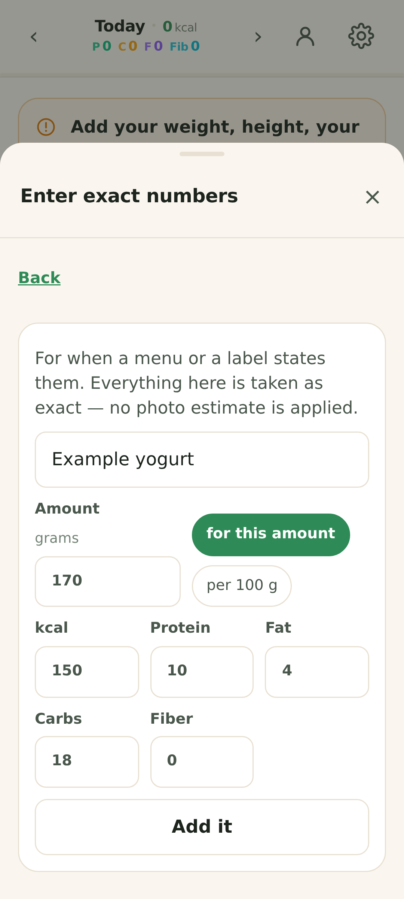
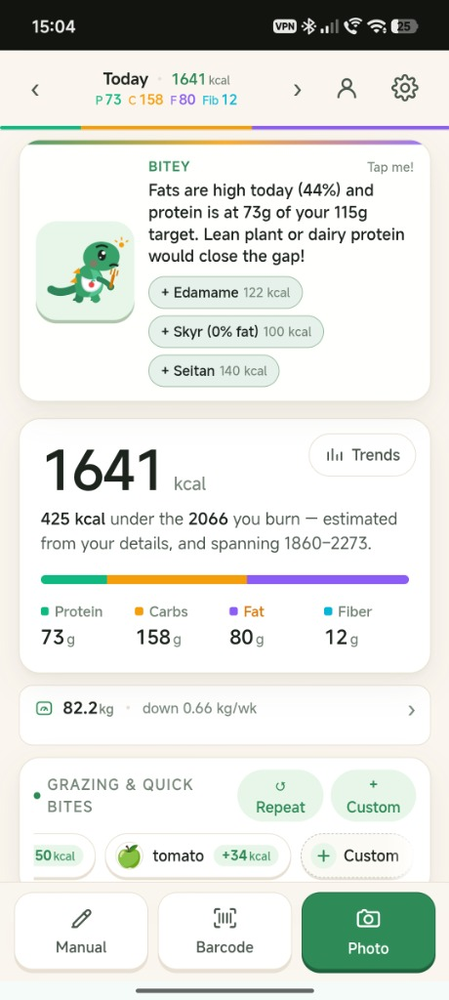
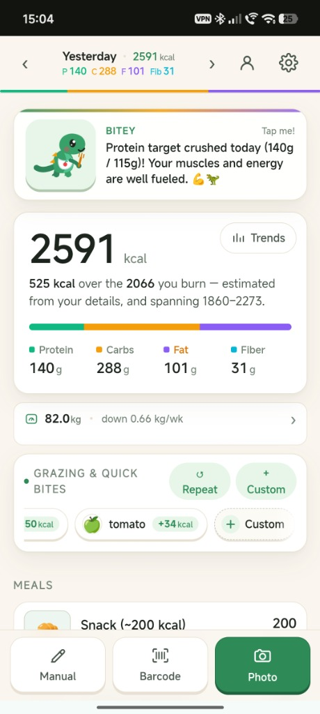
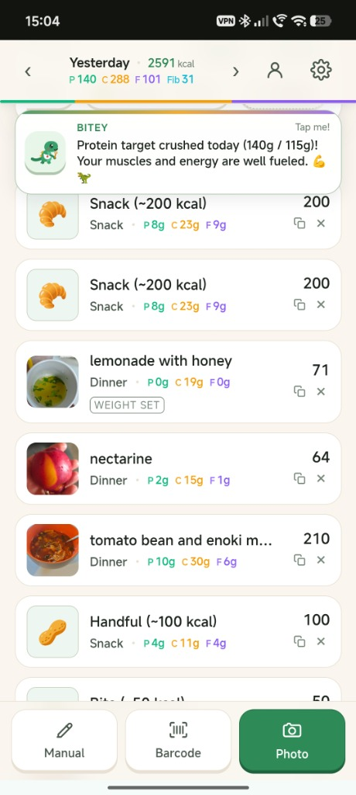
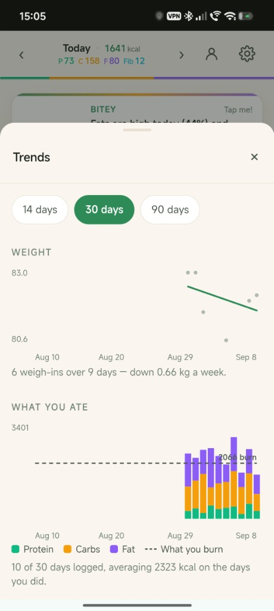
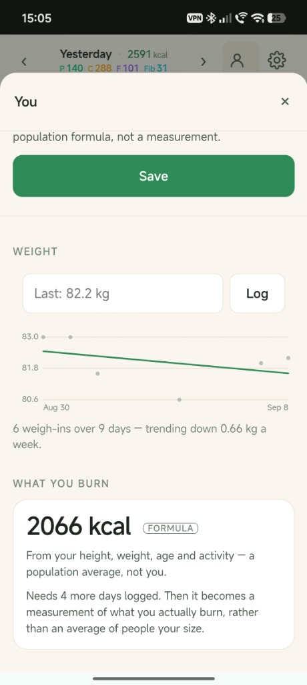
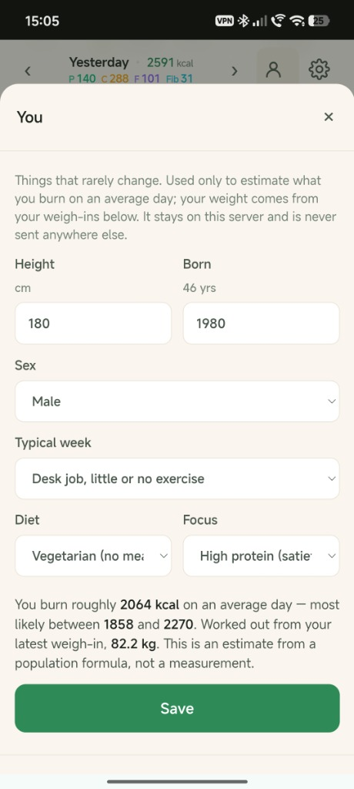

परियोजना के बारे में
भोजन की तस्वीर खींचिए, हिस्से को सही कीजिए, उसे लॉग इन कीजिए।
Bitey (पूर्व में प्लेट) एक कैलोरी और मैक्रो लॉग है जिसका प्राथमिक इनपुट एक फोटो है। मल्टीमॉडल विज़न मॉडल प्लेट में भोजन की पहचान करता है; इसे खाने वाले का वजन सही हो जाता है। श्रम का विभाजन कोई सुविधा नहीं है - यह वह मूल खोज है जिस पर पूरा डिज़ाइन टिका हुआ है।
जमीनी सच्चाई के साथ Nutrition5k डेटासेट से 145 प्लेटों में बेंचमार्क किया गया, दृश्य मानव सुधार भौतिक पैमाने की सटीकता के लगभग आधे लाभ को पुनर्प्राप्त करने में सिद्ध हुआ, जिससे कम दैनिक घर्षण और पोषण संबंधी सटीकता के बीच एक आदर्श संतुलन बना।
Android ऐप, Bitey — निजी फूड लॉग, आपकी डायरी आपके फ़ोन पर रखता है, बिना खाते और बिना ऐसे सर्वर के जो आपका लॉग रखे। खाना हाथ से, बारकोड से या झटपट नाश्ते के रूप में जोड़ें, और वज़न, ट्रेंड और बैकअप डिवाइस पर ही रखें। Bitey AI, एक वैकल्पिक सदस्यता, भोजन की फ़ोटो या आपका लिखा विवरण पढ़ता है, और आप सहेजने से पहले हर अनुमान की समीक्षा करके उसे बदलते हैं।
Android के लिए Bitey
Android ऐप Google Play पर बंद टेस्टिंग में है और अभी सार्वजनिक रूप से उपलब्ध नहीं है।
वर्ज़न 1.0.13 में नया: अपने शब्दों में भोजन बताएँ, फिर सहेजने से पहले Bitey AI का अनुमान जाँचें। खाद्य खोज और लेबल से सटीक मान दर्ज करना मुफ़्त है। स्क्रीनशॉट में काल्पनिक उदाहरण खाद्य हैं।



एंड्रॉइड सुविधाएँ
- 🔒 शुरू से निजी: आपकी डायरी, फ़ोटो, वज़न और कैश किए गए बारकोड खाद्य आपके फ़ोन पर रहते हैं। कोई खाता, विज्ञापन या एनालिटिक्स नहीं।
- 📸 Bitey AI आपकी फ़ोटो पढ़ता है: भोजन की फ़ोटो लें या गैलरी से चुनें, और जाँचने व सहेजने के लिए उसके खाद्य, हिस्से और कैलोरी पाएँ। यह अंगूर और मेवों जैसे छोटे खाद्य गिनता है, और बचे हुए खाने की फ़ोटो से तुलना करके बता सकता है कि आपने कितना खाया।
- ✍️ या भोजन बताएँ: आपने क्या खाया, लिखें, और Bitey AI कैलोरी, प्रोटीन, कार्ब और वसा का अनुमान लगाता है। सहेजने से पहले आप हर खाद्य की समीक्षा करके उसे बदलते हैं।
- 🔄 "यह नहीं खाया?": Bitey AI को बताएँ कि व्यंजन असल में क्या था, और वह वही फ़ोटो दोबारा पढ़ता है।
- 🥗 चाहें तो आपका आहार: एक वैकल्पिक सेटिंग Bitey AI को ऐसे व्यंजनों के लिए शाकाहारी, वीगन या पेस्केटेरियन आहार ध्यान में रखने देती है जो दोनों तरह बन सकते हैं। जब तक आप इसे चालू न करें, यह बंद रहती है।
- 🔎 मुफ़्त तरीके: ऐप की हर भाषा में नाम वाले लगभग 900 आम खाद्य और व्यंजनों की तालिका में खोजें, बारकोड स्कैन करें, या लेबल से मान लिखें। बारकोड फ़ोन से तभी बाहर जाता है जब आप Open Food Facts खोज की अनुमति दें।
- ⚖️ वज़न और बैकअप: अपना वज़न दर्ज करें, खाने और वज़न के ट्रेंड देखें, और फ़ोन बदलते समय डेटा का बैकअप लें या उसे वापस लाएँ।
- 💳 Bitey AI सदस्यता: Google Play से ख़रीदी और सँभाली जाती है, पहला महीना मुफ़्त। पहली फ़ोटो या विवरण फ़ोन से बाहर जाने से पहले Bitey अनुमति माँगता है, और आप इसे सेटिंग में वापस ले सकते हैं।
वेब ऐप






वेब ऐप की सुविधाएँ
- 📸 विजन-फर्स्ट फूड लॉगिंग: एक फोटो खींचें और विज़न मॉडल को खाद्य पदार्थों की पहचान करने दें, मिश्रित भोजन को विघटित करें और तुरंत आधारभूत पोषण का अनुमान लगाएं।
- ⚖️ अनुभवजन्य भाग अंशांकन: पारदर्शी त्रि-स्तरीय त्रुटि बैंड इस पर आधारित है कि वजन स्केल-मापा गया था, उपयोगकर्ता-आंख से समायोजित किया गया था, या मॉडल-अनुमानित किया गया था।
- 🔄 "वह नहीं जो तुम खा रहे हो?" पुनः पढ़ें: यह बताएं कि दूसरी तस्वीर लिए बिना इन-मेमोरी फोटो का स्क्रैच से पुन: विश्लेषण करने के लिए एक डिश वास्तव में क्या है।
- 🏷️ बताया गया पोषण सत्यापन: भौतिक रूप से असंभव कैलोरी घनत्व के विरुद्ध स्वचालित विवेक जांच के साथ मुद्रित पैनलों या रेस्तरां मेनू के लिए सीधी मैन्युअल प्रविष्टि।
- 📊 ऊर्जा और वजन रुझान: गहन, ईमानदार दैनिक समय-श्रृंखला विज़ुअलाइज़ेशन न्यूनतम-वर्ग व्यय प्रवृत्तियों के साथ-साथ मैक्रोन्यूट्रिएंट ऊर्जा द्वारा एकत्रित कैलोरी सेवन पर नज़र रखता है।
- 📦 पूर्ण डेटा स्वामित्व और शून्य लॉक-इन: गेट-मुक्त निर्यात से संरचित JSON, स्प्रेडशीट-तैयार CSV, और एक स्व-निहित ZIP संग्रह प्राप्त होता है जिसमें प्रत्येक कैप्चर की गई भोजन तस्वीर होती है।
- 🦖 Bitey पोषण साथी: एक उत्साहजनक दैनिक साथी जो कार्रवाई योग्य, व्यक्तिगत प्रतिक्रिया के साथ आपके प्रोटीन और कैलोरी लक्ष्यों को पूरा करने का जश्न मनाता है।
- 🔒 निजी और खाता बजट: स्थायी परिचालन लागत सुनिश्चित करने के लिए अंतर्निहित प्रति-खाता दैनिक कोटा गार्ड के साथ सख्ती से शून्य-टेलीमेट्री वास्तुकला।